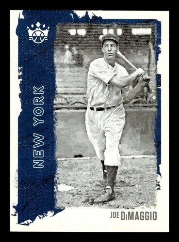

Joe DiMaggio "Joltin' Joe, The Yankee Clipper"
Career Highlights & Facts
(Facts are AI-generated and may require verification)
- Holds the record for the longest hitting streak in major league history at 56 consecutive games.
- Achieved 3 Most Valuable Player awards during a career that spanned 13 seasons.
- Struck out only 369 times in 6821 career at-bats, averaging one strikeout every 18.5 plate appearances.
Would you like to find out more about Joe DiMaggio?
1947 New York Yankees
From Spring Training to Screen Test
Lawrence Baldassaro
“Baseball isn’t statistics; it’s Joe DiMaggio rounding second.”
— attributed to Jimmy Breslin by Herb Caen,
San Francisco Chronicle
, June 3, 1975.
Joe DiMaggio was one of the most recognizable and popular men in mid-twentieth century America. He was celebrated in song and literature as an iconic hero, and he was married, briefly, to the nation’s number one glamour girl. On March 16, 1999, the House of Representatives passed a resolution honoring him “for his storied baseball career; for his many contributions to the nation throughout his lifetime; and for transcending baseball and becoming a symbol for the ages of talent, commitment and achievement.”
But first and foremost Joe DiMaggio was a ballplayer. Known as the Yankee Clipper, he was the undisputed leader of New York Yankees teams that won nine World Series titles in his 13-year career that ran from 1936 to 1951, with three years lost to duty in World War II. He was three times the American League’s Most Valuable Player and he holds what many consider to be the most remarkable baseball record of all, a 56-game hitting streak in 1941. As the son of immigrants, he was the embodiment of the American Dream, a rags-to-riches story played out in pinstripes.
Joseph Paul DiMaggio was born Giuseppe Paolo DiMaggio on November 25, 1914, in Martinez, California, 25 miles northeast of San Francisco. His parents, Giuseppe and Rosalia (Mercurio) DiMaggio, had settled there after emigrating from Sicily. After Joe was born they moved the family to San Francisco, where Giuseppe continued to work as a fisherman. Joe was the eighth of their nine children, one of five sons. Two of his brothers,
Vince
and
Dominic
, would also play in the major leagues.
Unlike two of his older brothers, Joe had no interest in joining his father on the fishing boat. Instead, he played for several amateur and semi-pro teams in baseball-rich San Francisco. It was 19-year-old Vince, who was then playing for the San Francisco Seals of the Pacific Coast League, who got Joe into professional ball. When the Seals found themselves in need of a shortstop near the end of the 1932 season, Vince convinced Seals manager
Ike Caveney
to give his 17-year-old brother a chance. Joe played in the final three games of the season, and then was signed to a contract in 1933 for $225 a month.
Moved to the outfield because of his erratic arm, DiMaggio hit .340 and set a PCL record by hitting in 61 straight games. In 1934, he hit .341, but a knee injury that sidelined him in August made major-league teams leery of signing him. The Yankees offered to buy his contract for $25,000 and five players, but with the contingency that he remain with the Seals in 1935 to prove he was healthy. DiMaggio made a convincing case by hitting .398, with 34 homers and 154 runs batted in.
In 1936, only two years after the departure of
Babe Ruth
, the heralded rookie came to spring training facing big expectations. Writing in
The Sporting News
on March 26,
Dan Daniel
noted, “Yankee fans regard him as the Moses who is to lead their club out of the second-place wilderness. . ..”
It didn’t take long for the rookie to make his mark. Halfway through the season, when he was hitting around .350 and had started in right field in the All-Star Game, his photo was on the cover of
Time
magazine. For the year he hit .323 with 29 homers and drove in 125 runs.
DiMaggio was the classic five-tool player; in addition to hitting for average and power, he could run, throw, and field.
Joe McCarthy
, the Yankees manager from 1931 to 1946, called him the best base runner he ever saw. His all-around play led the 1936 Yankees to the first of four straight World Series titles. The 21-year-old sensation had established himself as the successor to Babe Ruth. After the Series, he received a hero’s welcome in his home town of San Francisco, where Mayor Angelo Rossi gave him the key to the city.
DiMaggio finished second in the MVP vote in 1937, despite leading the American League in home runs, slugging percentage, runs, and total bases. He won the first of his three MVP Awards in 1939, when he led the league with a career-best .381 average. Following that season, he married 21-year-old
Dorothy Arnold
, a singer, dancer, and actress he met while filming a bit part in the movie
Manhattan Merry-Go-Round
.
By then the 6-foot-2, 190-pound outfielder was acknowledged as the best player in baseball, but to some his ethnic background was still ripe for stereotypical portrayal. In a cover story in the May 1, 1939 issue of
Life
magazine, Noel Busch identified DiMaggio as a “tall, thin Italian youth equipped with slick black hair” and “squirrel teeth.” But the young ballplayer apparently confounded Busch’s general perception of Italian Americans. “Although he learned Italian first, Joe, now twenty-four, speaks English without an accent and is otherwise well adapted to most U.S. mores. Instead of olive oil or smelly bear grease he keeps his hair slick with water. He never reeks of garlic and prefers chicken chow mein to spaghetti.”
After winning a second consecutive batting title in 1940, DiMaggio reached a new level of fame in 1941. He set one of the most enduring records in sports by hitting in 56 consecutive games. On May 15, the day the streak began, the Yankees were in fourth place, and DiMaggio had batted a lowly .194 over the previous 20 games. On June 17, DiMaggio broke the Yankee hitting-streak record of 29 games, set by
Roger Peckinpaugh
in 1919 and equaled by
Earle Combs
in 1931.
As DiMaggio’s streak continued to grow it gradually became a national obsession. Day after day, across the country, the question was: “Did he get one today?” In its July 14 issue,
Time
magazine wrote: “Ever since it became apparent that the big Italian from San Francisco’s Fisherman’s Wharf was approaching a record that had eluded
Ty Cobb,
Babe Ruth,
Lou Gehrig
and other great batsmen, Big Joe’s hits have been the biggest news in U.S. sport. Radio programs were interrupted for DiMaggio bulletins.”
On June 29, in the seventh inning of the second game of a doubleheader in Washington, DiMaggio hit a single to pass
George Sisler
’s 41-game streak set in 1922, commonly referred to as the “modern record” to distinguish it from
Wee Willie Keeler
’s 44-game streak, the “all-time record” set in 1897. The
New York
Times
reported on June 30 that the fans “roared thunderous acclaim” to “one of the greatest players baseball has ever known,” while his teammates ‘to a man,’ were as excited as schoolboys over the feat.”
On July 2, DiMaggio broke Keeler’s record with a fifth-inning home run off Red Sox pitcher
Dick Newsome
.
Fifteen days later, on July 17,
the streak ended in Cleveland’s Municipal Stadium
in front of 67,468 fans — at that time the largest crowd ever to see a night game — when Indians third baseman
Ken Keltner
robbed DiMaggio of hits with two spectacular plays. Over the course of the streak the Yankees moved from fourth place, 5 1/2 games back, to first, seven games ahead of Cleveland. DiMaggio went on to hit safely in his next 16 games, and the Yankees went on to win the pennant and then beat the Brooklyn Dodgers in the World Series.
One of the fascinating sidelights of the streak is that in his 223 times at bat, DiMaggio struck out only five times. In fact, he struck out only 13 times in the entire season. The late Harvard paleontologist and essayist Stephen Jay Gould, noting the streak, called it “the most extraordinary thing that ever happened in American sports.”
DiMaggio batted .357 for the 1941 season and led the league in runs batted in and total bases. He won his second MVP Award, receiving 15 first-place votes, while
Ted Williams
, who hit .406 and led the league in home runs, slugging percentage, on-base percentage, and runs, received eight.
DiMaggio batted just .305 in 1942, the lowest average of his seven years in the majors, and he also compiled the lowest number of home runs and runs batted in. The Yankees won the pennant, but they lost the World Series to the Cardinals, marking the team’s only loss in 10 trips to the Series during DiMaggio’s career.
On February 17, 1943, DiMaggio enlisted in the Army Air Force. Like many other major leaguers, he never saw combat, serving instead in a morale-boosting role by playing on service baseball squads. In June 1944 he was sent to Hawaii, where he continued to play ball but also spent several weeks in a Honolulu hospital suffering from stomach ulcers. After being sent back to the mainland, he was granted a medical discharge in September 1945. In the meantime, his wife had been granted a divorce and custody of their son, Joe, Jr.
DiMaggio’s first season following the war was a disappointment for the thirty-one-year-old returning veteran, dubbed “America’s No. 1 athletic hero” by the
New York
Daily News
.
While his slugging percentage was fourth- best in the AL, his batting average (.290) and RBIs (95) were lower than in any previous season, and his home run total (25) the second lowest. As the 1947 season neared, the outlook for improvement was not good. The first news about DiMaggio that year was the announcement of his upcoming surgery to remove a bone spur from his left heel. On January 7, a three-inch spur was removed. Then, when skin-graft surgery was needed two months later to close the wound from the first operation, John Drebinger of the
New York Times
wrote that DiMaggio “seems to be giving more prominence to the human heel than it has received since the days of Achilles.”
The injury kept him out of the lineup until April 19, when he appeared as a pinch- hitter. He made his first start the next day, hitting a three-run homer in a 6–2 win over the Athletics, but by the end of April he was hitting a paltry .143. A 4-for-5 performance against the Red Sox on May 25 put him over the .300 mark for the first time. On May 26, before 74,747 fans, the Yankees won their fourth straight over Boston, and fifth straight overall. In the 9–3 win, DiMaggio went 3-for-4 and raised his average to .323. On June 3, in a 3–0 win over the first-place Detroit Tigers, DiMaggio got four hits to raise his average to a league-leading .368. He had hit safely in 16 straight games since May 18, hitting .493 over that stretch.
The Yankees moved into first place on June 15 with a doubleheader sweep of the St. Louis Browns. A 19-game winning streak, between June 29 and July 17, put them 11 1/2 games ahead of Detroit, and they finished the season with a 12-game lead over the Tigers.
By the end of the season, DiMaggio’s statistics were again below his pre-war levels. His average had fallen to .315, seventh best in the AL, with 20 home runs (his lowest total to date), and 97 RBIs, third in the league but his second lowest total. Although surpassed in virtually every offensive category by Ted Williams, who won his second Triple Crown, DiMaggio was awarded his third MVP Award on the basis of his all-around play in leading the Yankees to their first pennant since 1943. Receiving eight first-place votes compared to three for the Red Sox slugger, the Yankee Clipper edged his perennial rival by a single point, 202-201.
In the memorable World Series against the Dodgers, DiMaggio hit only .231, but he did hit two home runs, one of which gave the Yanks a 2–1 win in Game Five. In this Series, however, he is best remembered for his reaction to
Al Gionfriddo
’s spectacular catch in Game Six. In the sixth inning, the Yankees, trailing 8–5, put two men on with two out, bringing DiMaggio to the plate as the tying run. Gionfriddo, a seldom-used outfielder, had entered the game that inning as a defensive replacement. The Yankee slugger launched a long drive toward the visitors’ bullpen in deep left, but Gionfriddo was able to track it down and make a lunging catch just short of the bullpen before crashing into the waist-high gate near the 415-foot sign. No less memorable than the catch was DiMaggio’s reaction. In a rare display of emotion, the famously stoic star kicked at the dirt near second base when he saw that Gionfriddo had caught the ball.
Nineteen forty-eight proved to be DiMaggio’s last great season, at least in terms of statistics. Playing in 153 games, in spite of a bone spur in his right heel, he led the league in home runs, RBIs, and total bases, and finished second to
Lou Boudreau
in the MVP vote. The 1949 season proved to be one of the worst of his career; however, his heroic midseason return from injury helped cement his reputation as an inspirational team leader.
The lingering bone spur injury caused DiMaggio to miss the first 65 games of the ‘49 season. With the press speculating that the Yankee Clipper might be nearing the end of the road, a sullen DiMaggio isolated himself in his hotel room. Then, in mid-June, the pain suddenly disappeared. Two weeks later he made his debut in a crucial series against the Red Sox at
Fenway
. In the opener, on June 28, he drove in two runs and scored two in a 5–4 win. The next day he hit two homers and drove in four, then wrapped up his first regular-season series since the previous September with his fourth homer in three games and three RBIs. The sweep put the Yankees eight games ahead of the Red Sox.
Boston bounced back with a late-season surge that gave them a one-game lead over New York with two games at
Yankee Stadium
remaining. DiMaggio, meanwhile, had been hospitalized in September with pneumonia, but was in the starting lineup when the final series began.
The day of the opener, October 1, was also “Joe DiMaggio Day.” Before 69,551 fans, the Yankee Clipper, with his mother and brother Dom by his side, was lauded in several speeches and received what the
New York Times
described as “a small mountain of gifts.” At the conclusion of the hour-long ceremony, DiMaggio spoke to the crowd, ending his speech by saying, “I want to thank the good Lord for making me a Yankee.”
DiMaggio, described as looking “wan and weak after his recent siege,” had told manager
Casey Stengel
that he hoped to play three innings.
Instead, he played the entire game. With the Yankees trailing, 4–0, he doubled in the fourth and scored their first run in the 5–4 win that brought the two teams to a tie with one game left.
In the finale,
Vic Raschi
held the Sox scoreless through eight innings, but in the ninth two runs scored when DiMaggio’s tired legs weren’t able to catch up to a drive by
Bobby Doerr
that went for a triple. Drained of energy and realizing that he was a detriment to his team, DiMaggio ran in from center field, taking himself out of the game. The Yankees held on to win the game, 5–3, and the pennant. Limited to 76 games, he hit .346 with 67 RBIs. The
Associated Press
gave him its award for sports’ greatest comeback of 1949, with second place going to the Yankees, a team that had been plagued by injuries for much of the season.
DiMaggio was able to play in 139 games in 1950, hitting .301 with 32 home runs, 122 RBIs, and a league-leading .585 slugging percentage. But age and injury limited him to 116 games in 1951, when he hit only 12 homers and compiled the lowest average of his career at .263. On December 11, 1951, the 36-year-old veteran announced his retirement, saying, “If I can’t do it right, I don’t want to play any longer.”
In the six years he played after the war, DiMaggio remained the leader of a Yankees team that won the World Series in each of his final three seasons. But while he won the MVP Award in 1947, and 1948 was one of his best seasons, overall his postwar performance was not at the same level as it had been before the war. “Baseball wasn’t much fun for Joe from 1949 until he quit,” said teammate
Phil Rizzuto
. “He was getting older and he was hurt a lot.”
His post-war batting average was .304, with an average of 24 home runs per year, compared to .339 and 31 homers per year between 1936 and 1942.
In his career, DiMaggio, hit .325 with 361 home runs, 1,537 RBIs, and for a .579 slugging average. He was an All-Star in each of his 13 seasons and, in addition to winning three MVP Awards, he finished in the top nine seven other times. Perhaps more impressive than any other statistic is the fact that in 6,821 times at bat, he struck out 369 times — only eight more than his total number of home runs — for an average of once every 18.5 times at bat.
Given the relative brevity of his career, DiMaggio’s totals don’t measure up to those of many other major stars. But he was admired not only for what he did on the field but for how he looked doing it. Columnist Jim Murray wrote: “Joe DiMaggio played the game at least at a couple of levels higher than the rest of baseball. A lot of guys, all you had to see to know they were great was a stat sheet. DiMaggio, you had to see. It wasn’t only numbers on a page — although they were there too — it was a question of command, style, grace.”
In the eyes of his contemporaries, Joe DiMaggio was universally considered the best player they had ever seen. Even his arch-rival, Ted Williams, said, “I have always felt I was a better hitter than Joe, but I have to say that he was the greatest baseball player of our time. He could do it all.”
Stan Musial
, the often overlooked third member of the great triad of the 1940s and 1950s, said: “There was never a day when I was as good as Joe DiMaggio at his best. Joe was the best, the very best I ever saw.”
Pulitzer Prize-winning columnist Red Smith called DiMaggio “indisputably the finest ballplayer of his time.”
Rico Petrocelli
, a New York native who played for the Red Sox between 1965 and 1976, recalled going to Yankee Stadium as a youngster: “We were in the bleachers, and Joe DiMaggio was still playing. I looked around and noticed nobody was watching the pitcher throw the ball. Everyone was looking at DiMaggio. When he’d catch a ball, he’d lope after it. It was just beautiful to watch. I’ll never forget it.”
An unsigned column in the
Washington Post
on July 2, 1941, the day after DiMaggio surpassed
George Sisler’s
consecutive-game hit streak, placed the Yankee star alongside the other “Olympians” of baseball, such as Cobb, Ruth, and
Speaker
, and said of his style, “there is something about it, at bat and in the field, that suggests some of the great sculptures of the Italian Renaissance: Donatello’s, for example.”
In the batter’s box, DiMaggio was the picture of understated calm. He stood there motionless, hands and head still, feet wide apart. Only at the last moment, when he whipped the bat around in his trademark long swing, did he unleash the force that he had kept under tight control.
DiMaggio was no less adept at keeping his emotions under tight control, at least in public. DiMaggio embodied
sprezzatura
, the Italian term for the ability to make the difficult look easy. Teammate
Jerry Coleman
called him “the only professional athlete I’ve ever seen who had an imperial presence.”
But DiMaggio’s calm exterior masqueraded the inner turmoil that drove him to always be at his best. Whatever emotions he stuffed inside and hid from the paying customers manifest themselves in the ulcers that earned him a discharge from the service in 1945.
DiMaggio understood his role as a public figure and he did his best to live up to his image as the greatest player in the game and the leader of its best team. His grace and style on the field were matched by his appearance off of it. In his elegant tailored suits, he was the model of quiet elegance.
For all that, DiMaggio was an intensely private man who never felt completely comfortable in his role as hero. Before he became a national icon, he bore the additional, and unwanted, burden of being the great hero of Americans of Italian descent. Yankees pitcher
Lefty Gomez
, a close friend, said, “All the Italians in America adopted him. Just about every day at home and on the road there would be an invitation from some Italian-American club.”
For former New York Governor
Mario Cuomo
, DiMaggio’s life “demonstrated to all the strivers and seekers — like me — that America would make a place for true excellence whatever its color or accent or origin.”
New York
Daily News
columnist Mike Lupica acknowledged DiMaggio’s significance for his father and grandfather: “There was only one ballplayer for them, an Italian American ballplayer of such talent and fierce pride it made them fiercely proud, fiercely biased toward their man even after he had left the playing field for good.”
Hall of Fame manager
Tommy Lasorda
summed it up this way: “I knew every big leaguer when I was growing up, but Joe DiMaggio was my hero. He was our hero; he was everything we wanted to be.”
DiMaggio’s appeal to the general public was due, in part, to the stylish way he displayed his all-around ability as a ballplayer. But beyond that his colorless but dependable performance was right for the times. This sober, serious young man who went about his work without bravado or flamboyance was the ideal hero for a nation that was struggling, first to survive the Great Depression and then to win a war. The refrain of “Joe, Joe DiMaggio, we want you on our side,” from Les Brown’s 1941 hit song was a timely reflection of how the public identified with the young star.
The 1941 hitting streak, followed by his military service in World War II, helped DiMaggio become a national hero whose ethnic background, often noted by the pre-war press, became increasingly irrelevant. His fame and popularity were celebrated in song and literature as he became a touchstone of popular culture. In the 1949 Rodgers and Hammerstein musical
South Pacific
, sailors sing of the character named Bloody Mary that “her skin is tender as DiMaggio’s glove.” Santiago, the indomitable protagonist of Ernest Hemingway’s 1952 novella,
The Old Man and the Sea
, says that he must be worthy of his idol, the great DiMaggio. Paul Simon’s 1968 hit song, “Mrs. Robinson,” expressed nostalgia for a simpler, more innocent time by asking, “Where have you gone, Joe DiMaggio, a nation turns its lonely eyes to you.”
Unlike most professional athletes, Joe DiMaggio enjoyed a resurgence of fame and adulation in his post-baseball life. His legend was enhanced when, in January 1954, he once again made headlines by marrying Marilyn Monroe. But the ill-fated union of two of America’s most celebrated personalities lasted only nine months. DiMaggio had naively expected the film star to become a devoted housewife. According to Joe’s brother, Dom, “Her career was first. Joe could not condone the things that Marilyn had to do. Joe wanted a wife he could raise children with. She could not do that.” But DiMaggio, who remained devoted to Monroe, held out hope that they would remarry. “Joe had wanted that relationship to work,” said Dom. “He held on to it for the rest of his life.”
When Monroe died in 1962, Joe took charge of her funeral and ordered that roses be placed at her crypt twice a week.
DiMaggio spent several years in relative obscurity before appearing, incongruously, in the green and white uniform of the Oakland A’s, serving as a coach and vice president for
Charlie Finley’s
newly-transplanted franchise in 1968-69. Then, in the 1970s, he re-emerged as a national celebrity when, overcoming the shyness that had inhibited him during his playing days, he became a television spokesman for New York’s Bowery Savings Bank and the “Mr. Coffee” coffee maker. For much of his life thereafter, DiMaggio remained in the public eye by carefully orchestrating appearances at celebrity golf outings, card shows and Old-Timers’ games, were he was introduced as “baseball’s greatest living player,” a title bestowed upon him in a 1969 poll. By limiting his personal appearances and rigidly protecting his privacy, he was able to sustain the mystique that made him one of the most admired men in America, even when his career was long over.
On October 12, 1998, DiMaggio was admitted to Regional Memorial Hospital in Hollywood, Florida, where he had been living for many years. (It was the same hospital where the Joe DiMaggio Children’s Hospital had been established.) Two days later he underwent surgery for lung cancer and never fully recovered. He died at his home on March 8, 1999, at the age of 84.
One of those rare athletes — like Babe Ruth and Muhammad Ali — who transcended the world of sport, DiMaggio has been called by more than one writer the last American hero. Revisionist historians later offered a more nuanced view, portraying him as a flawed hero who became increasingly reclusive and suspicious of others. Nevertheless, when he died his enduring status as a cultural icon was confirmed by an outpouring of adulation which few public figures, in any walk of life, could evoke. His death was front-page news in every major newspaper, was covered extensively on television newscasts and specials, and was the cover story in
Newsweek
magazine. Referring to the frequent bulletins on DiMaggio’s health that had been issued in the months prior to his death, Frank Deford wrote that it was “as if he were some great head of state.”
As one Brooklyn native put it, DiMaggio “epitomized an era when, for a lot of us, baseball was the most important thing in life.”
The answer to Paul Simon’s question — Where has Joe DiMaggio gone? — remains the same: Nowhere. He remains firmly lodged in the American consciousness as a stylish symbol of a time when baseball was the undisputed national pastime and America was enjoying unprecedented prosperity. On April 25, 1999, two months after his death, DiMaggio’s monument was unveiled in Yankee Stadium’s Monument Park, joining those honoring
Miller Huggins
, Lou Gehrig, Babe Ruth, and
Mickey Mantle
. The inscription reads, in part, “A Baseball Legend and An American Icon.”
In addition to the sources cited in the Notes, the author also consulted:
Baldassaro, Lawrence.
Beyond DiMaggio: Italian Americans in Baseball
(Lincoln: University of Nebraska Press, 2011).
Cramer, Richard Ben.
Joe DiMaggio: The Hero’s Life
(New York: Simon and Schuster, 2000).
DiMaggio, Dom, with Bill Gilbert.
Real Grass, Real Heroes
:
Baseball’s Historic 1941 Season
. 1990 (New York: Zebra Books, 1991).
Johnson, Richard A., and Glenn Stout.
DiMaggio: An Illustrated Life
(New York: Walker, 1995).
Kahn, Roger.
The Era: 1947-1957, When the Yankees, the Giants and the Dodgers Ruled the World
(New York: Ticknor & Fields, 1993).
Moore, Jack B.
Joe DiMaggio: Baseball’s Yankee Clipper
(New York: Praeger, 1987).
Seidel, Michael.
Streak: Joe DiMaggio and the Summer of ‘41
(New York: McGraw-Hill, 1988).
H RES 105 EH, 106th Congress, March 16, 1999.13
Dan Daniel,
The Sporting News
, March 26, 1936: 3.
Noel Busch,
Life
, May 1, 1939: 62-69.
Time
, July 14, 1941.
New York Times
, June 30, 1941.
Stephen L. Gould, “Streak of Streaks,” in Nicholas Dawidoff,
Baseball: A Literary Anthology
(New York: Library of America, 2002), 591.
New York Daily News
, April 28, 1946.
New York Times
, February 26, 1947.
New York Times
, October 2, 1949.
Ibid.
New York Daily
News
, December 12, 1951.
Maury Allen,
Where Have You Gone, Joe DiMaggio? The Story of America’s Last Hero
(New York: Dutton, 1975), 136.
Jim Murray,
Los Angeles Times
, July 7, 1994.
Ted Williams,
My Turn at Bat: The Story of My Life
(New York: Pocket Books, 1970), 209-10.
Stan Musial, quoted in .
www.baseball-almanac.com.
New York Herald Tribune
, August 13, 1950.
Rico Petrocelli, interview with author, February 12, 2004.
“The Great DiMagg’,”
Washington Post
, July 2, 1941.
Jerry Coleman, interview with author, September 1, 2005.
Maury Allen,
Where Have You Gone, Joe DiMaggio?: The Story of America’s Last Hero (
New York: Dutton, 1975). 25.
New York Daily News
, March 9, 1999.
Ibid.
Tommy Lasorda, interview with author, January 19, 2001.
Ibid.
Michael Bamberger, “Dom DiMaggio,”
Sports Illustrated
, July 2, 2001: 110.
cnnsi.com, March 8, 1999;
New York Daily News
, March 9, 1999.
Full Name
Joseph Paul DiMaggio
Born
November 25, 1914 at Martinez, CA (USA)
Died
March 8, 1999 at Hollywood, FL (USA)
Batting Champions
Home Run Champions
Hall of Fame
Most Valuable Player
Siblings
1947 New York Yankees
From Spring Training to Screen Test
Career Totals
| WAR | AB | H | HR | BA | R | RBI | SB | OBP | SLG | OPS | OPS+ |
|---|---|---|---|---|---|---|---|---|---|---|---|
| 79.1 | 6821 | 2214 | 361 | .325 | 1390 | 1537 | 30 | .398 | .579 | .977 | 155 |
Statistics via Baseball-Reference.com
The Original Clue